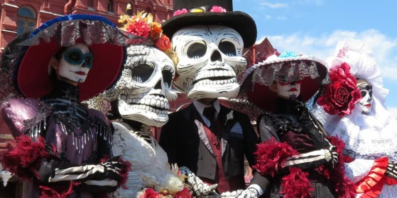
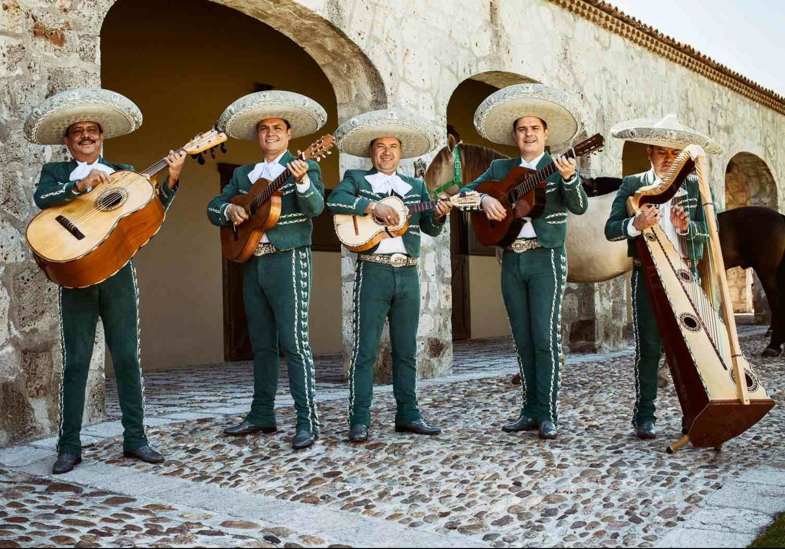
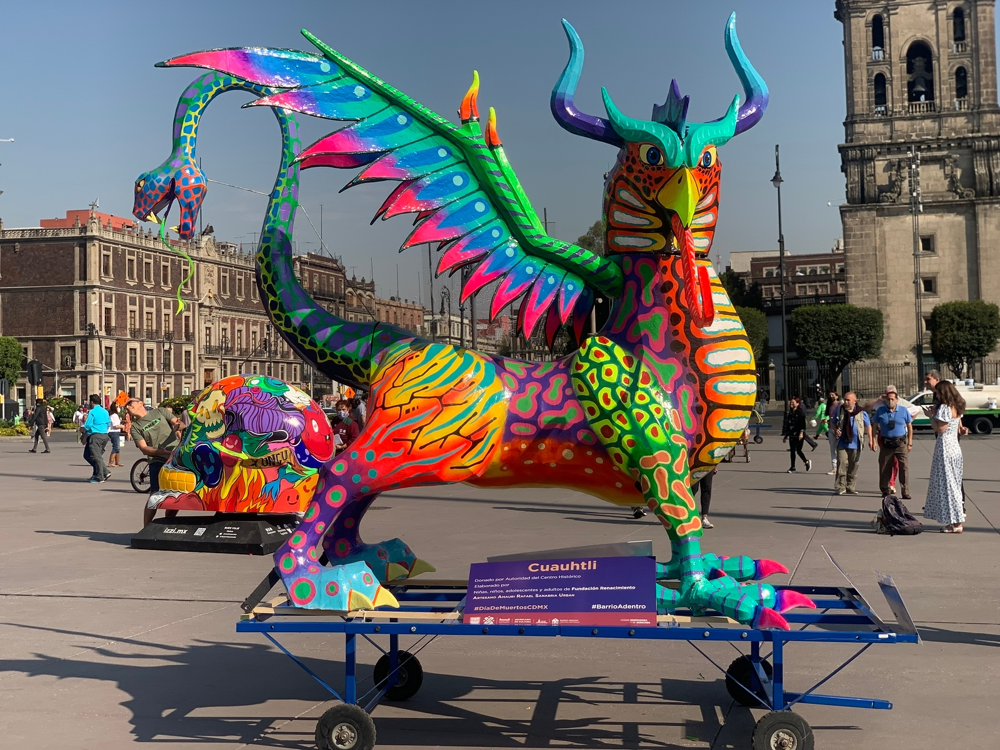
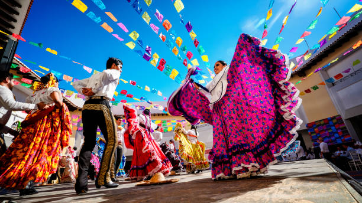

Curiosidades sobre a cultura mexicana
A cultura mexicana é muito rica e diversa, e sofreu a influência de vários povos. Foram desde povos pré-colombianos, como os astecas e maias, que viveram em território mexicano por milênios e construíram sociedades complexas e de enorme riqueza cultural, e os espanhóis, que colonizaram o país e impuseram suas tradições.



Día de los Muertos
O Día de los muertos (Dia dos mortos) é uma data comemorativa celebrada no México no dia 2 de Novembro, na qual é costume ir aos cemitérios visitar os túmulos dos entes queridos e preparar altares com alimentos, velas, flores e outros elementos. Dizem que, somente nesses dias, as almas podem voltar do além para estar perto dos seus entes queridos.



Mariachis
Los Mariachis são grupos musicais tradicionais do México, conhecidos por sua música alegre e danças animadas e vários instrumentos.
Representam uma das mais importantes tradições culturais do país, com influências indígenas, europeias e africanas.
O nome "Mariachi" pode se referir tanto ao conjunto musical quanto à música que eles tocam, e é um elemento essencial em festas, cerimônias e celebrações mexicanas.

Alebrijes
Os Alebrijes são figuras fantásticas e coloridas, uma arte popular mexicana de grande importância cultural, especialmente na região de Oaxaca.
São criaturas imaginárias, frequentemente feitas de papel machê ou madeira, com cores vibrantes e desenhos complexos. Embora não sejam uma tradição tradicionalmente associada ao Dia de los Muertos (Dia dos Mortos), os Alebrijes são frequentemente incorporados à celebração.



Danças mexicanas
A cultura mexicana também é rica e diversificada em sua danças, com influências indígenas, europeias e afro-americanas. A música é uma parte presente nas celebrações mexicana.
O Jarabe Tapatío, ou "Dança do Chapéu Mexicano", é a dança nacional do México, vinda do século XIX, caracterizada por um ritmo alegre e passos que envolvem a troca de chapéus entre os dançarinos, sendo geralmente executada por um casal vestido caracterizado.
A Presença da Cultura Indígena
Pouco mais de 20% do povo do México é indígena e o país tem mais de 60 línguas diferentes, e cada região tem seus próprios grupos étnicos, cada um com sua cultura.
Os maias, por exemplo, abandonaram suas cidades por volta de 1500 dC, mas não desapareceram. Cerca de 500.000 pessoas de ascendência maia permanecem no México, a maioria ainda falando maia.